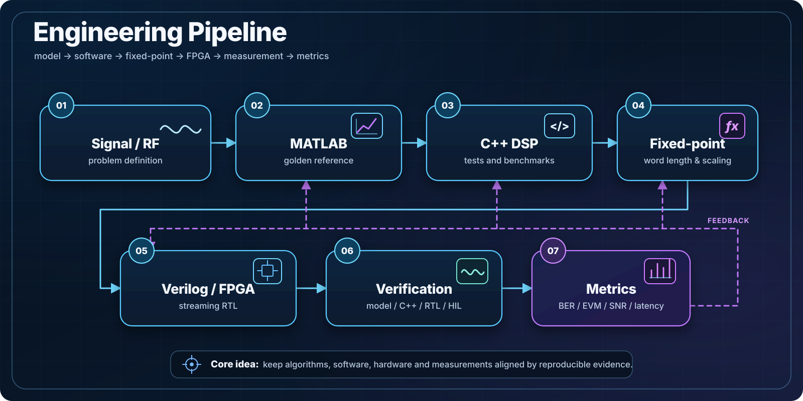
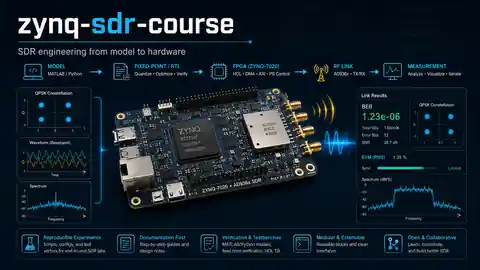
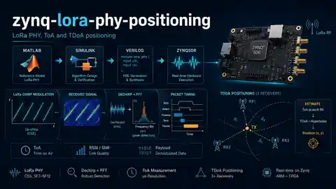

Digital signal processing
Signal analysis, filtering, transforms, modulation/demodulation, data paths, and processing pipelines for practical systems.
I build signal processing pipelines, FPGA-oriented systems, engineering software, communication and telemetry solutions, with practical depth in circuit design and secure engineering.
My work combines algorithms, hardware understanding and implementation discipline: from MATLAB/Simulink and Verilog to C++ tooling, validation workflows and real-world deployment logic.
A measurement-driven workflow: metrics close the loop back to MATLAB, C++ DSP, fixed-point decisions and RTL rather than treating hardware validation as the final step.

The strongest part of my profile is the ability to connect mathematical models, hardware constraints and implementation details into one coherent engineering workflow.
Signal analysis, filtering, transforms, modulation/demodulation, data paths, and processing pipelines for practical systems.
Architecture thinking for FPGA-based solutions, prototyping flows, HDL implementation, and integration with higher-level tools.
Engineering work around communication chains, protocol handling, telemetry logic, validation methodology, and system-level robustness.
Applied electronics background combined with information security awareness for real devices, infrastructure and specialized development.
Public repositories that best reflect practical engineering depth: SDR education, LoRa PHY and positioning research, C++ DSP, network measurement and workstation automation. Each card names the evidence to open first.

A bilingual SDR course from DSP models and fixed-point design through HDL flow, Zynq/AD9363 RF work and IQ analysis to final projects.
Evidence: in-fabric QPSK modem on Zynq-7020 + AD9361 closed on a two-board 915 MHz RF link (payload BER ≈4×10−4); CI-checked HDL, synchronization and IQ-recording labs.
Open first: Reviewer path Evidence map

LoRa PHY and ToA/TDoA positioning with real SX1262 IQ, a MATLAB reference, streaming fixed-point Simulink, generated Verilog and synthesis evidence.
Evidence: all 32 SF×CR modes in the MATLAB acceptance campaign, exact 8/8 HDL cosimulation for ToA, and an IQ-to-AXI timestamp receiver synthesized for xc7z020. Hardware LoRa reception is not claimed yet.
Open first: M1 acceptance Roadmap
C++17 DSP library with FIR design and filtering, Goertzel tone detection, GCC-PHAT delay estimation and rational resampling, packaged for downstream CMake projects.
Evidence: deterministic unit tests, optional AVX2 hot paths, generated benchmark reports and multi-platform CI.
Open first: Reviewer quick check Algorithm evidence matrix
Hardware-assisted network performance testing with FPGA timestamping and methodology aligned with RFC 2544 and ITU-T Y.1564.
Evidence: hardware-free synthetic SLA pipeline checked in CI and a committed sample result package; the reviewer checklist keeps synthetic demos separate from hardware measurements.
Open first: Synthetic SLA demo Reviewer checklist
Reusable PowerShell automation for Windows OpenSSH key-only access, Git onboarding, CMake and Visual Studio Build Tools setup.
Evidence: CI parses every script through the PowerShell AST, checks Markdown links and runs PSScriptAnalyzer.
Open first: CI quality gates Safety model
A profile shaped not only by software delivery, but also by academic work, teaching practice, technical writing and invention activity.
Strong analytical and research foundation supporting applied work in signal processing, communications, FPGA-oriented development and engineering methodology.
Long-term teaching practice helps translate difficult technical material into structured, understandable engineering knowledge and practical workflows.
Experience in technical writing and invention activity complements implementation work with discipline, clarity and a stronger systems perspective.
Typical working stack across modeling, implementation and supporting engineering software.
Open to discussions related to DSP, FPGA systems, communications, telemetry, engineering software and technically demanding R&D work.
System design, technical consulting, architecture thinking, educational materials, engineering tooling and specialized implementation work.